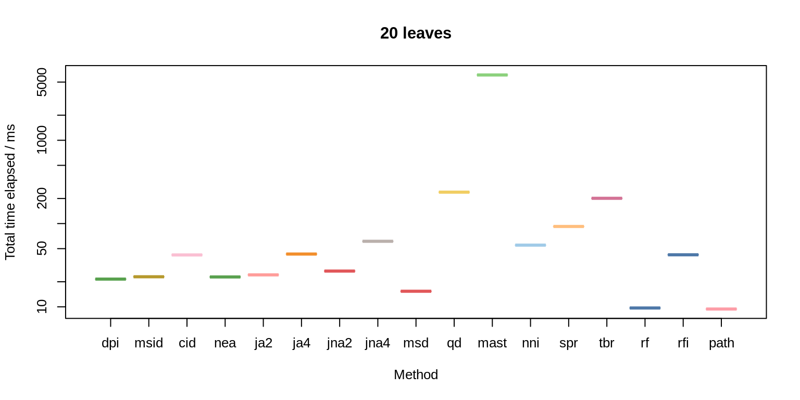
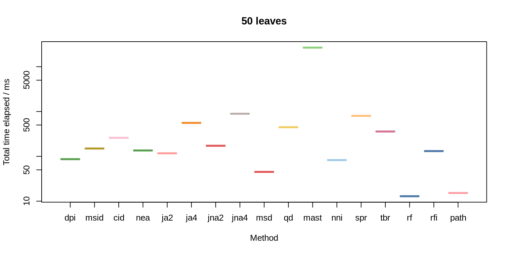

vignettes/timing.Rmd
timing.RmdBenchmarking conducted on an Intel(R) Xeon(R) CPU machine with 8.57 TB of RAM, comparing 45 trees obtained by performing successive subtree pruning and regrafting rearrangements on a pectinate starting tree.
The time taken to compare all 990 pairs of trees by each method, was calculated, replicating timing 1 times.


| 20 leaves, mean | 50 leaves, mean | |
|---|---|---|
| Path | 10 | 15 |
| Robinson-Foulds | 10 | 13 |
| Match. Split Dist. | 17 | 49 |
| Diff. Phylog. Info | 23 | 87 |
| Nye et al. | 25 | 130 |
| Match. Split Info Dist | 25 | 160 |
| JRF (k=2, arboreal) | 26 | 120 |
| JRF (k=2, non-arb.) | 29 | 180 |
| Clust. Info. Dist. | 44 | 270 |
| JRF (k=4, arboreal) | 46 | 570 |
| Robinson-Foulds Info | 47 | 140 |
| NNI (approx.) | 60 | 89 |
| JRF (k=4, non-arb.) | 65 | 910 |
| SPR (approx.) | 99 | 830 |
| TBR (approx.) | 220 | 380 |
| Quartet | 240 | 450 |
| MAST size | 6600 | 27000 |